Соотнесите картину с видом изобразительного искусства:1. (1)
2. (2)
3. (3)
2. (2)
3. (3)
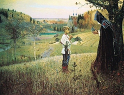 | 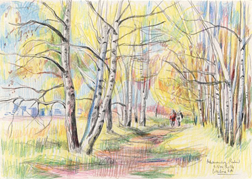 | 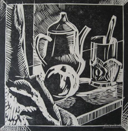 |
Выберите правильный ответ:
(1)
(2)
(3)
Пройти тест · все вопросы на одной странице
 |  |  |
(1)
(2)
(3)
Основные виды — живопись, графика и скульптура. Рисунок входит в графику, мозаика относится к декоративному искусству.
Лирический описывает настроение, а не жанр изображения. Бытовой, мифологический и батальный — жанры изобразительного искусства.
В графике главное средство — линия, цвет только сопровождает рисунок.
Блик — самое светлое пятно на предмете, куда падает прямой луч.
Гризайль пишут одной краской, обычно серой, и лепят форму только тоном.
Гуашь — кроющая краска для живописи. Карандаш, тушь и пастель — графические материалы.
Составные цвета смешивают из двух основных поровну: оранжевый, зелёный и фиолетовый.
Живопись строится на цвете. Штрих и линия относятся к графике, тектоника — к конструкции формы.
Масло и темпера — живописные краски. Сангина, карандаши, уголь, тушь и пастель работают как графика.
Уголь слабо держится на бумаге и легко стирается, поэтому рисунок закрепляют лаком.
Светотень передаёт объём: освещённые места выступают, затенённые уходят в глубину.
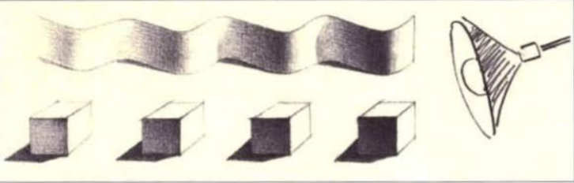 |
Тон показывает степень освещённости участка: от светлого к тёмному.
(1)
(2)
(3)
Краски дают живопись, карандаш, тушь и перо — графику, глина, дерево, металл и камень — скульптуру.
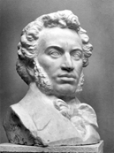 | 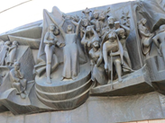 | 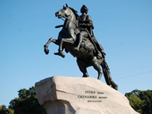 |
Станковая скульптура рассчитана на близкий осмотр, декоративная украшает предмет или здание, монументальная крупная и стоит на открытом месте.
Ахроматические цвета не имеют цветового тона: это чёрный, белый и серый между ними.
Скульптуру выражает пластика объёма. Цвет, блик и штрих для неё не основное средство.
Объём в пространстве есть у скульптуры. Графика, иллюстрация и живопись остаются на плоскости.
Скульптор берёт твёрдый материал, из которого можно высечь или отлить объём: камень, дерево, металл.
Копия повторяет уже существующее произведение. Оригинал — само это произведение, репродукция — его печатный повтор.
Натюрморт возможен в живописи, графике и скульптуре. Архитектура создаёт здания, а не изображение вещей.
Натюрморт собирает в одну группу неодушевлённые предметы.
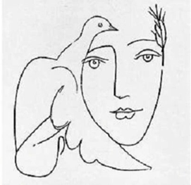 |
Голубка как символ мира — рисунок Пабло Пикассо.
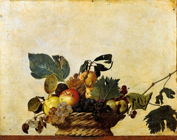 |
Самостоятельный натюрморт как отдельную картину в курсе связывают с Караваджо.
Пространственные искусства имеют видимую форму и передают облик людей, предметов и среды.
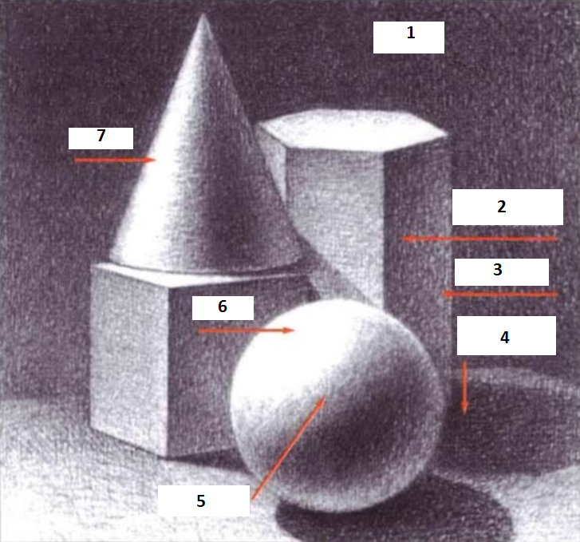 |
| 5 | |
| 6 | |
| 7 | |
| 3 | |
| 2 | |
| 4 | |
| 1 |
На освещённом предмете различают блик, свет, полутень, собственную тень и рефлекс. Рядом находятся падающая тень и фон.
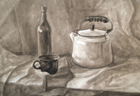 | 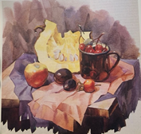 |
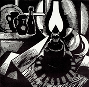 | 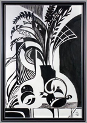 |
Технику выдаёт след: прозрачная заливка у акварели, плотное пятно у гуаши и темперы, штрих у графики, густой мазок у масла.
Конструктивные искусства организуют среду обитания: это архитектура и дизайн.
Сравнение предмета с геометрическим телом даёт сведения о его форме.
Конструкция — взаимное расположение частей предмета и их соотношение.
Светотень — распределение света и тени, которым показывают объём предмета.
Карандаш, тушь, уголь и пастель — материалы графики, ими не пишут кроющей краской.
Локальный цвет — собственный цвет предмета без бликов, теней и рефлексов.
Красный, синий и жёлтый нельзя получить смешением других красок, поэтому они основные.
Повторение чужого произведения называют копией.
Портрет передаёт и внешние черты человека, и его внутренний мир.
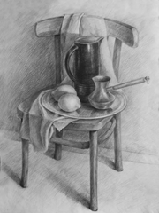 |
Учебный рисунок осваивает грамоту изображения: построение формы и её конструкцию.
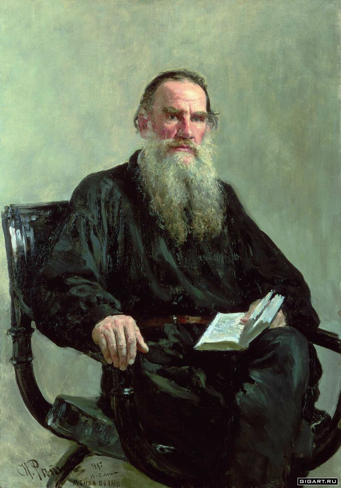 | 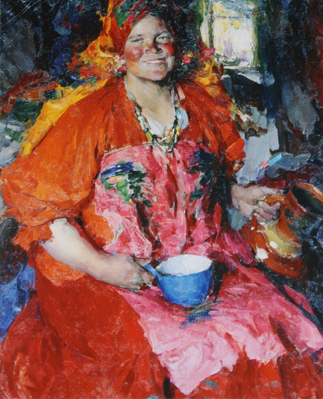 | 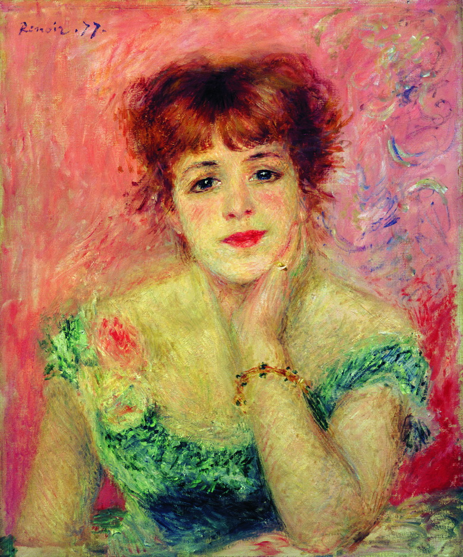 |
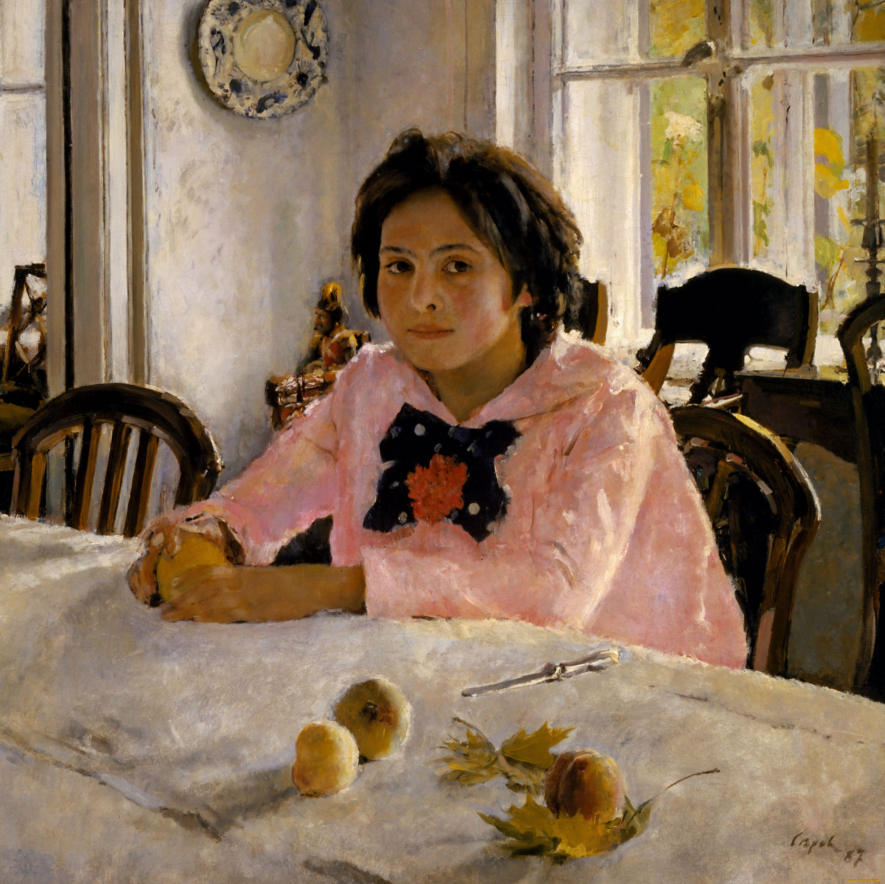 | 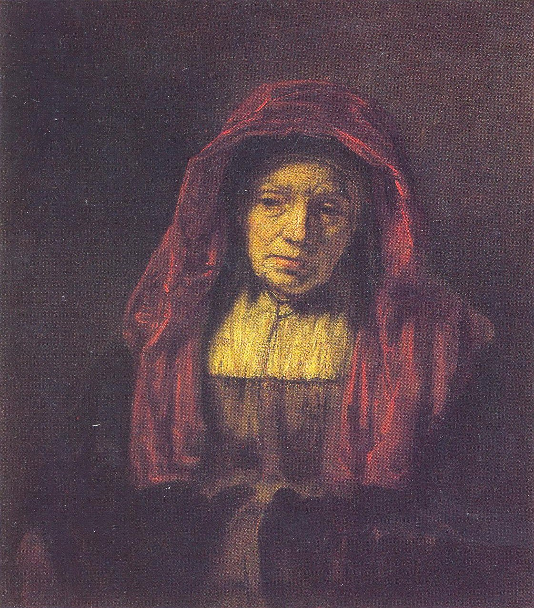 | 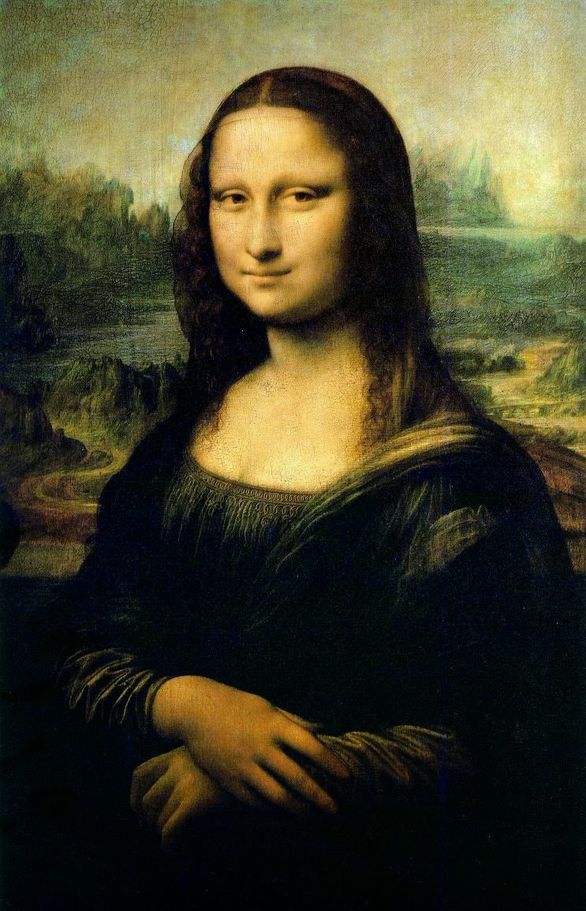 |
Автора портрета узнают по репродукции: эпохе, манере письма и известному облику человека.
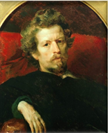 | 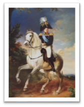 |
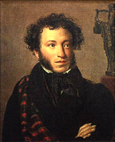 | 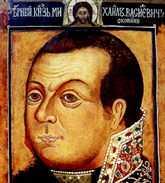 |
Парадный портрет представительный и часто в рост, камерный близкий и домашний, групповой объединяет несколько людей, автопортрет художник пишет с себя.
Смальта — кусочки цветного стекла, из которых набирают мозаику.
В учебном толковании слово «портрет» связано с извлечением сущности человека.
Автопортрет художник или скульптор исполняет с самого себя.
Парадный портрет показывает положение человека: обычно в полный рост, на архитектурном или пейзажном фоне.
Несколько главных персонажей на одном изображении образуют групповой портрет.
Камерный портрет раскрывает личный мир человека без парадной обстановки.
Профиль — разворот головы сбоку.
Фас — разворот головы спереди.
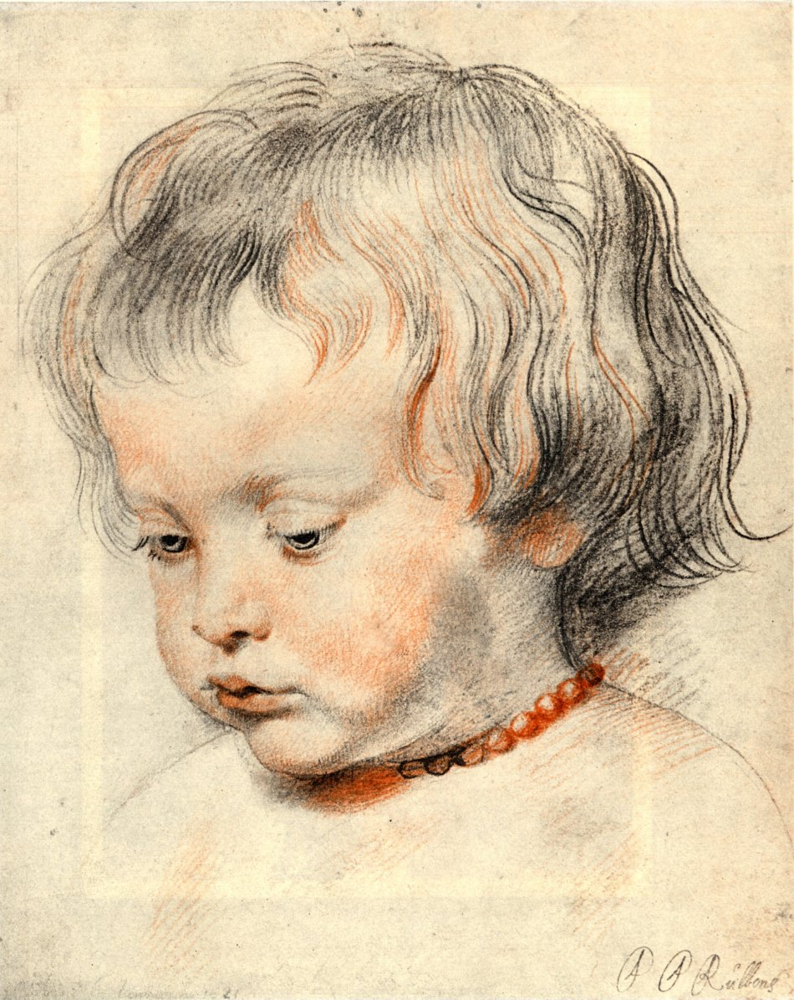 |
Сангина даёт красноватый штрих, уголь — мягкий чёрный. Оба материала графические.
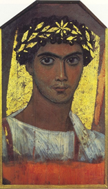 |
Фаюмский портрет писали на доске и закрывали им лицо мумии в египетском погребении.
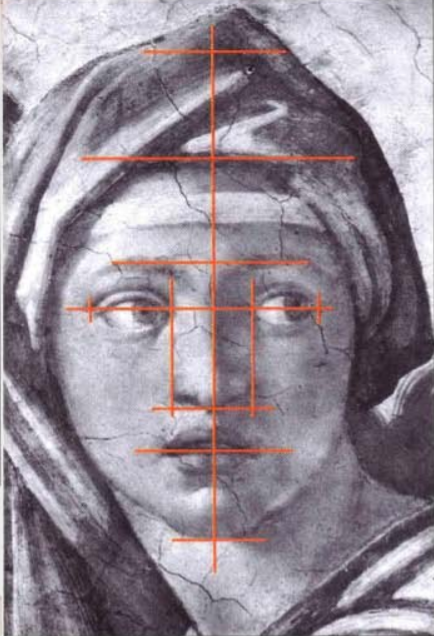 |
Пропорция — соотношение величин частей, составляющих одно целое.
Источниками света считают естественный и искусственный. Яркость и время суток описывают характер освещения.
Живопись узнают по цвету и краске, графику — по линии и штриху, гравюру — по оттиску с печатной доски.